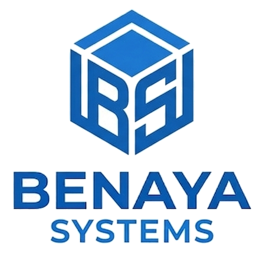

Uma iniciativa Benaya SystemsA IAPE TEC é uma iniciativa da Benaya Systems em colaboração com a Rede Adventista de Ensino, dedicada a projetar e manter softwares que facilitam as demandas do dia a dia escolar — da gestão de equipes ao acompanhamento pedagógico.
A Benaya Systems desenvolve software sob medida. A IAPE TEC é a frente dessa atuação voltada especificamente para instituições da Rede Adventista de Ensino — nasce do contato direto com a rotina escolar, não de fora pra dentro.
O compromisso é simples: cada sistema entregue precisa funcionar todos os dias, sem exigir treinamento longo, sem travar na hora que mais importa.
A Benaya Systems projeta e mantém a infraestrutura; a colaboração com a Rede Adventista de Ensino garante que cada ferramenta nasça de um problema real, validado por quem usa no dia a dia escolar.
Quadros, prazos e responsáveis num só lugar, com visibilidade real pra liderança e foco pra cada equipe. Já em uso por instituições de verdade, com planos pro Brasil e pro mercado internacional.
Conhecer o MyTask →